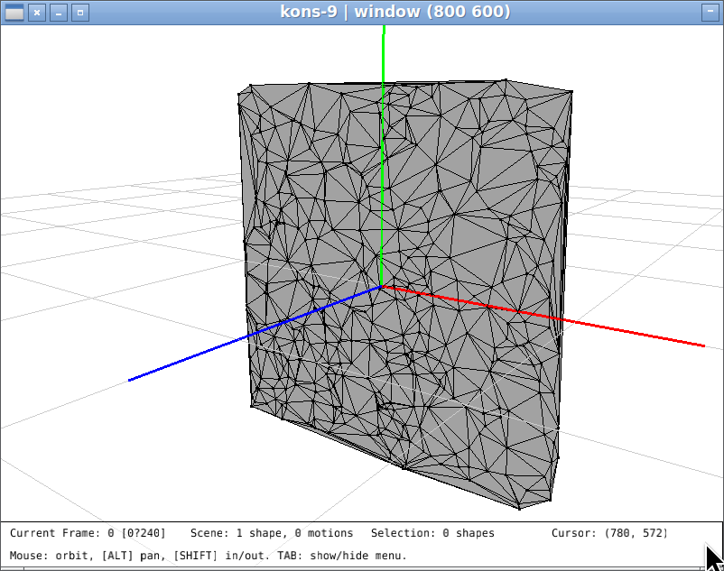

Table of Contents
1. kons-9-addons
Some experiments and functions upon kons-9. As I have not completed the tour of kons-9 (and ignore most of it) what is this section may be completely useless. With time I found that some functions that appear here already exists in kons-9.
2. Utilities
2.1. The λ macro
I use this λ macro everywere:
;; to use λ in emacs: (define-key key-translation-map (kbd "C-c l") (kbd "λ")) (defmacro λ (lambda-list &body code) `(function (lambda ,lambda-list ,@code)))
2.2. GET-SHAPE
Given a scene groups hierarchy and a name, returns the corresponding shape. It may be used to get a shape for inspection.
(defgeneric get-shape (name scene-or-group) (:documentation "Given a scene and a name, returns the shape with that name if it exists.") (:method ((name symbol) (a-scene scene)) (get-shape name (shape-root a-scene))) (:method ((name symbol) (group shape-group)) (loop with found = nil for c across (children group) while (not found) do (cond ((and (subtypep (type-of c) 'scene-item) (eq (name c) name)) (setq found c)) ((subtypep (type-of c) 'shape-group) (setq found (get-shape name c)))) finally (return found))))
2.3. APPLY-TRANSFORM
Applies a transfom to a shape. Kons-9 stores the shape original set points in the instance and a transform slot is the transformation (location, rotation & size) that must be applied to obtain the desired object. The transform is automatically applied before rendering. In some cases it is useful to make some computations in function of transformed points coordinates. The APPLY-TRANSFORM function computes transformed points and resets the transform. If shape is a polyhedron an after method re-computes normals.
(defmethod apply-transform ((s shape) &optional transform) "Apply a transform to a shape (updates its points) according to the transform TRANSFORM or to its own transform. In the later case, shape's transform is reseted." (let ((transf (or transform (transform s)))) (loop for i below (length (points s)) for p in (loop with matrix = (transform-matrix transf) for p across (points s) collect (transform-point p matrix)) do (setf (aref (points s) i) p)) (unless transform ;; when transform belongs to shape. reset it. (reset-transform transf)) s))
There is a problem with this function. I cannot be extended easily to SHAPE-GROUP in particular when shared objects are used. This needs some work.
2.4. Dealing with the viewport
2.4.1. Functions to show/hide elements on the scene
Taking adavantage of the special variables that define the visibility of scene elements or the way shapes are displayed we ca define show/hide functions. Since these definitions are repetitive let's do it with a macro:
(defmacro make-show-hide-function (v n) (let ((show-f (intern (strcat "SHOW-" (symbol-name n)))) (hide-f (intern (strcat "HIDE-" (symbol-name n))))) `(progn (defun ,show-f () (setq ,v t)) (defun ,hide-f () (setq ,v nil))))) (eval-when (:load-toplevel :compile-toplevel) (loop for (special-v name) in '((*display-filled?* faces) (*display-wireframe?* wireframe) (*display-points?* points) (*display-ground-plane?* ground) (*display-axes?* axes)) do (eval `(make-show-hide-function ,special-v ,name))))
Now we can use (hide-faces), (hide-axes), (hide-points), (hide-wireframe) or (hide-ground) to hide elements and the corresponding show functions to show them.
2.4.2. Changing the point of view
While it is easy to change the point of view using the mouse, it is difficult to recover a given point of view or set it precisely. Let's define the def-viewpoint macro:
(defmacro def-viewpoint (name &key x-rot y-rot side-dist up-dist fwd-dist) `(defun ,name () (setq *cam-x-rot* ,(or x-rot *cam-x-rot*) *cam-y-rot* ,(or y-rot *cam-y-rot*) *cam-side-dist* ,(or side-dist *cam-side-dist*) *cam-up-dist* ,(or up-dist *cam-up-dist*) *cam-fwd-dist* ,(or fwd-dist *cam-fwd-dist*)) t))
This macro defines a function that position the camera. It may be used without parameters, for eaxmple after setting the desired positions using the mouse it can be memorized using:
(def-viewpoint favorite-viewpoint)
Memorize the current configuration that can be recovered using the newly defined FAVORITE-VIEWPOINT function. Another example may be a top-viewpoint:
(def-viewpoint top-viewpoint :up-dist 0 :fwd-dist -10 :x-rot 90 :y-rot 0 :side-dist 0 :up-dist 0)
which defines the top-viewpoint function.
3. About points
- The method
IS-POINT-IN-POLYGON?(points point)returnsTifPOINTis in the polygon formed byPOINTSandNILotherwise.POINTSmay be a list of points, a vector of points or a instance of curve. The points must be in the XY plane. - The method
IS-POINT-IN-POLYGON?*does the same but points must be co-planar (not necessarily in XY plane).
4. About curves
- The
INSERT-CURVE(c1 c2 where)method replace a point inC1byC2's sequence of points. The paramterWHEREmay be a integer or a point (that must exist inC1). The modified curve s returned. - The
REVERSE-CURVE-POINTSmethod reverse the order of points in a curve re returns the modified curve. - Function
MAKE-ROUNDED-RECTANGLE-CURVE(width height radius)makes …
5. About polyhedrons
5.1. Functions for faces & edges
ADJACENT-FACES(VERTEXFACES-OR-POLYH): Returns the list of faces adjacent to a vertex among a list of faces or a polyhedron.FACES-COPLANAR-P(NORMALS) Given a list of (face) normals, returnsTif they are parallel.FACE-EDGES(FACE) given a face returns a list of pairs of point indices that correspond to face' edges.EDGE-FACES(POLYHEDRONEDGE) Given a polyhedron and an edge, returns the list of faces that contain EDGE.SORT-EDGES(EDGES) Given a list of edges returns a list of contiguous edges. for example given:((412 471) (471 259) (71 467) (467 412) (455 313) (10 455) (387 388) (63 389) (389 347) (388 89) (73 387) (259 121) (313 73) (121 10) (89 63))
returns:
((347 71) (71 467) (467 412) (412 471) (471 259) (259 121) (121 10) (10 455) (455 313) (313 73) (73 387) (387 388) (388 89) (89 63))
this is useful for making a curve from a list of edges that belong to a contour (for example)
5.2. Functions / methods for polyhedrons
POLYHEDRON-EDGES(POLYHEDRON) Given a polyhedron returns the list of edges (without duplicates).CONTOUR-EDGES(POLYHEDRON) Returns the list of edges that are on the contour ofPOLYHEDRON.CONTOUR-CURVE(POLYHEDRON) Makes a curve that corresponds to the contour ofPOLYHEDRON.CONTOUR-POINT-REFS(POLYHEDRON) Returns a list of points indices that corresponds to the contour of POLYHEDRON.CONTOUR-POINTS(POLYHEDRON) Returns a list of points that corresponds to the contour of POLYHEDRON.
6. Delaunay triangulation
Adapted from lofi-tri to use point-origin package. Main functions:
DELAUNAY-2D-FACES*(POINTSPOINT-INDICES)method that, given a list points and point-indices returns a vector of faces obtained by triangulation. ThePOINT-INDICESare used to define the faces.DELAUNAY-2D-FACES(POINTS)is a function that computes a list of faces given a set (list or vector) of points in plane XY. Faces redefined as lists of point indices inPOINTS.DELAUNAY-SHAPE(POINTS)is likeDELAUNAY-2D-FACESbut creates an instance of polyhedron.
6.1. Example
This function creates a set of random points in a square, computes faces and makes a polyhedron.
(defun square-filled-with-random-triangles () (with-clear-scene (let* ((points (loop repeat 400 for x = (- (random 4.0) 2.0) for y = (- (random 4.0) 2.0) collect (p! x y 0)))) (add-shape *scene* (delaunay-2d-shape points)))))
